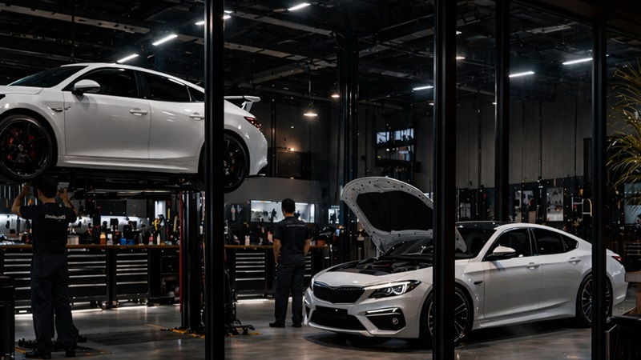
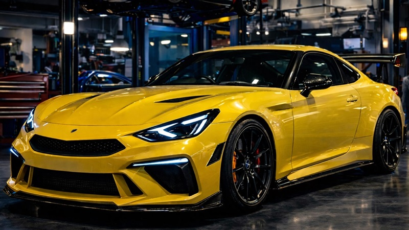

エンジンチューニング
レスポンスやトルク感、フィーリングまで含めて調整。愛車の個性を引き出すメニューです。

Premium Performance Lounge
本格的なチューニングとメンテナンスの現場に、落ち着いたラウンジの心地よさを添えた 大人のためのカーショップ。愛車と向き合う時間を、より豊かで特別なものにします。
CONCEPT
エンジン、ECU、足まわり、一般メンテナンスまで、クルマの状態や目的に合わせて丁寧にご提案。 ただ性能を上げるだけではなく、日常でも扱いやすいバランスを重視します。
作業場に隣接したラウンジでは、コーヒーを片手に愛車が整っていく様子をゆったり眺められます。 待ち時間そのものも、上質なショップ体験の一部になる空間づくりを大切にしています。
清潔感と落ち着きを基調にした空間設計で、初めての方でも相談しやすい雰囲気を意識。 こだわり派のオーナーにも信頼していただける、長く通えるショップを目指しています。
SERVICE
レスポンスやトルク感、フィーリングまで含めて調整。愛車の個性を引き出すメニューです。

街乗りとスポーツ走行の両立を見据え、扱いやすさと性能のバランスを追求します。

乗り味、姿勢、安心感を大切にしながら、走るシーンに合わせた足まわりへ仕上げます。

定期点検や消耗品交換も、チューニングショップならではの目線で細やかに対応します。
GALLERY


ABOUT
ニュルブルクリンクチューニングショップは、一般のお客様にとっても相談しやすいチューニングショップでありたいと考えています。 専門的な内容をわかりやすくご説明し、目的や予算、使用シーンに合わせて最適な方法をご提案します。
速さだけでなく、気持ちよく走れること、安心して乗れること、そして愛車との時間をもっと楽しめること。 そうした価値を大切にしながら、ひとりひとりに合ったカーライフをサポートしています。
「性能だけではなく、時間の質まで含めて満足していただける店づくりを目指しています。」
落ち着いた照明とゆったりした席で、愛車の作業を眺めながらコーヒーを楽しめる空間です。
ACCESS
初めてのご相談でも歓迎です。点検やメンテナンスの相談から、チューニング方針のご相談まで、 お客様の使い方に合わせて丁寧にご案内いたします。
CONTACT
走りの方向性、気になる症状、メンテナンスの相談など、どんな内容でもご相談ください。 ご来店予約や作業相談はお電話にて承っています。